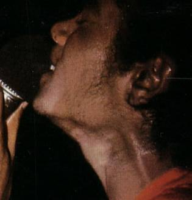
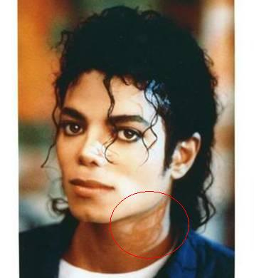
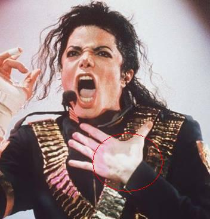

VITILIGO OR PLASTIC SURGERY?
“Appearances are often deceptive” reads an old English proverb. This adage couldn’t be more befitting, given the life of the legendary dancer – Michael Jackson.
The other day while reading an article on plastic surgery I stumbled upon one that dwelled on Michael Jackson’s constant change in skin color, and that urged me into writing this.
There are many myths surrounding Michael Jackson and his persisting change in skin color which eventually earned him the title ‘Wacko Jacko’. He was widely chastised in the media for ‘turning his back on his African ancestry’. However, in 1993 Michael Jackson revealed in an Oprah show, that he had a skin disease Vitiligo and Lupus that turned his skin white.
Vitiligo, a classic disorder of the skin destroys the pigmentation of the skin in patches. There is no known cure to the disease with most people resorting to camouflaging the skin using cosmetic solutions.
Pictures of Michael Jackson spotting the disease



Michael’s makeup artist for over 20 years, Karen Faye comments: “It started happening relatively early, he even was trying to hide it from me. He tried to hide it for quite awhile. He’d always try to cover it with makeup and even out his skin tone until it got so extensive. It’s all over his body. In the beginning I tried to cover the light spots to match the darker part of his skin, but then it became so extensive that we had to go with the lighter part of his skin because his whole body was reacting… he’d have to be in complete full body makeup, every inch of his body. So it was easier to make the transition to him to the lighter shade that he is.”
Ironically, the World Vitiligo Day is observed on June 25, the day the singer passed away!
“I’m just like everyone else… I cut, I bleed and I embarrass easily” – Michael Jackson
Posted on: August 11, 2016